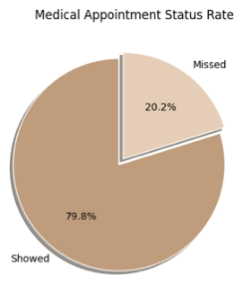
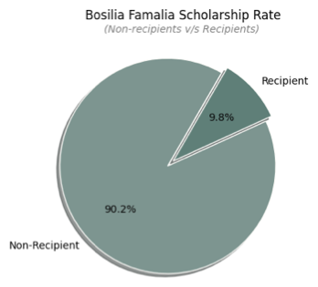
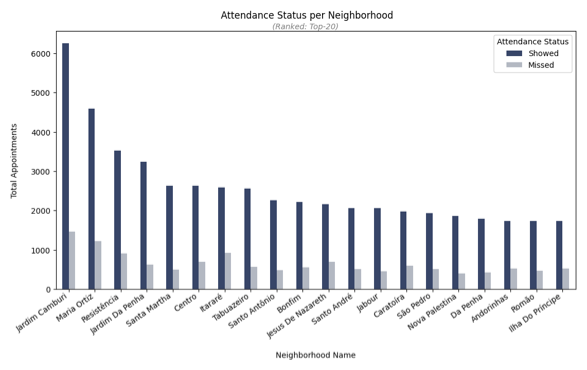
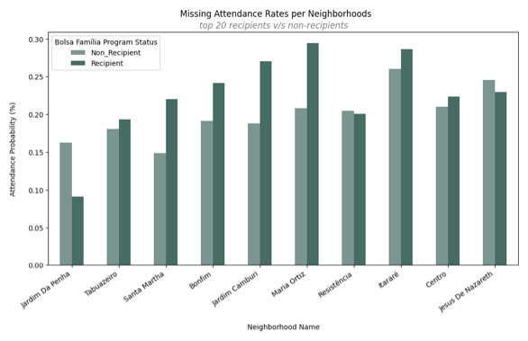
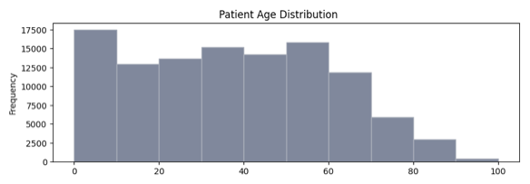
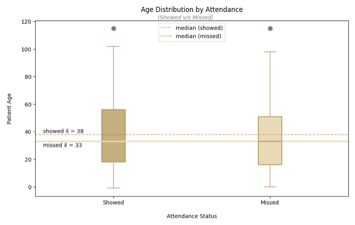
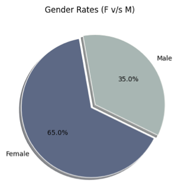
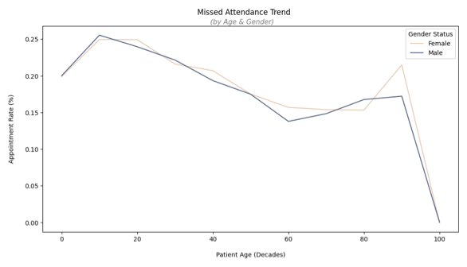

Investigate a Dataset
Overview
This project was the first of two required assessments for my WGU "Introduction to Data Analysis" course, run in partnership with Udacity. I chose the "No-Show Appointments" dataset from Kaggle: about 100,000 medical appointment records from Brazil, tracking whether patients actually attended their scheduled appointments.
Rather than reach for the more obvious columns, I wanted to explore questions rooted in the relationships between people, the possible or hidden "why" behind their actions. That pointed me toward Age, Gender, Neighborhood, and Scholarship (Brazil's Bolsa Família welfare program) as my independent variables against No-Show as the dependent variable. I also suspected most of my classmates would gravitate toward the more generic columns, so this felt like a chance to dig into something more interpersonal.
From there, I posed two research questions:
- How does the Bolsa Família Scholarship influence No-Show rates, and does this relationship vary across different Neighborhoods?
- How does a patient's Age correlate with No-Show rates, and does this trend differ between Genders?
Data Wrangling
I loaded the dataset and took a first look at its structure before doing anything else.
# View first five rows of the dataset
(noshow_uncleaned_DF.head())
PatientId AppointmentID Gender ScheduledDay \
0 2.987250e+13 5642903 F 2016-04-29T18:38:08Z
1 5.589978e+14 5642503 M 2016-04-29T16:08:27Z
2 4.262962e+12 5642549 F 2016-04-29T16:19:04Z
3 8.679512e+11 5642828 F 2016-04-29T17:29:31Z
4 8.841186e+12 5642494 F 2016-04-29T16:07:23Z
AppointmentDay Age Neighbourhood Scholarship Hipertension \
0 2016-04-29T00:00:00Z 62 JARDIM DA PENHA 0 1
1 2016-04-29T00:00:00Z 56 JARDIM DA PENHA 0 0
2 2016-04-29T00:00:00Z 62 MATA DA PRAIA 0 0
3 2016-04-29T00:00:00Z 8 PONTAL DE CAMBURI 0 0
4 2016-04-29T00:00:00Z 56 JARDIM DA PENHA 0 1
Diabetes Alcoholism Handcap SMS_received No-show
0 0 0 0 0 No
1 0 0 0 0 No
2 0 0 0 0 No
3 0 0 0 0 No
4 1 0 0 0 No
Right away, the PatientId column stood out. The very first row alone reads 2.987250e+13, a patient ID written in scientific notation, and I couldn't find any documentation explaining why the IDs were structured this way or why they were so large. That, combined with the ScheduledDay and AppointmentDay columns storing full timestamps that needed splitting, and the Neighbourhood column being written in all caps with a typo in its own column name, set my cleaning agenda:
- Check for missing (NaN/Null) values, of which there were none.
- Check for duplicate rows, of which there were also none.
- Convert
Gender,Neighbourhood, andNo-showto category types, andScheduledDay/AppointmentDayto datetime, to cut down on memory usage. - Downsize the numeric columns (
PatientIdto int64,Ageand the binary flag columns to int8). - Rename columns to fix typos (
HipertensiontoHypertension,HandcaptoHandicap) and standardize casing (NeighbourhoodtoNeighborhood). - Normalize
Neighborhoodtext from all-caps to title case. - Parse
ScheduledDayandAppointmentDayinto four separate date/time columns, then drop the two original timestamp columns.
By the end, the cleaned dataset (noshow_DF) still held all 110,527 original rows, now spread across 16 columns instead of 14, and its memory footprint dropped substantially, from 39.8 MB down to 14.1 MB.
Exploratory Data Analysis
Before digging into either research question, I looked at No-Show on its own to establish a baseline. About 80% of patients showed up for their appointments, while roughly 20% missed them.

Research Question 1: Scholarship, No-Show, and Neighborhood
I started by looking at the Scholarship variable independently. Only about 9.8% of patients in the dataset were active Bolsa Família recipients, a much smaller share than I expected given the program's purpose of supporting low-income families.

Neighborhood told a similar story of concentration. Jardim Camburi accounted for far more appointments than any other location, and it also had one of the lower missed-appointment rates at 19%, while Itararé had a noticeably higher missed rate of 26.3% despite far fewer total appointments. This was my first hint that location itself might be a stronger predictor of attendance behavior than I'd assumed going in.

When I combined Neighborhood and Scholarship status directly, the pattern got clearer, and more complicated. Scholarship recipients had a higher overall missed-appointment rate (11.6%) than non-recipients (9.4%), but that relationship wasn't consistent from one neighborhood to the next. In Jardim Camburi and Santa Martha, recipients missed appointments noticeably more often than non-recipients, but in Jardim Da Penha the pattern flipped, with recipients missing appointments less often.

My takeaway: the Bolsa Família Scholarship does influence a patient's likelihood of missing an appointment, but that influence isn't uniform. It interacts with where a patient lives in ways a single overall percentage can't capture.
Research Question 2: Age, Gender, and No-Show
Age turned out to be a genuinely useful predictor. The distribution was right-skewed, with the largest concentration of patients between 0 and 10 years old, over 17,500 records in that single age bin alone.

When I split Age by attendance status, patients who missed their appointments had a lower median age (33) than those who showed up (38), suggesting younger patients were somewhat more likely to skip appointments.

Gender was a different story. Female patients made up 65% of the dataset compared to 35% male, a meaningful imbalance on its own.

But when I compared missed-appointment rates between the two groups, they came out nearly identical (both hovering around 20%), which told me Gender alone wasn't doing much explanatory work. Layering Age back in confirmed this: across both genders, the youngest patients (0-20) missed appointments the most, around 25%, and the oldest patients (60-80) missed the least, around 15%. The two gender lines tracked almost on top of each other the whole way through, meaning Age, not Gender, was driving the trend.

My takeaway: a patient's Age does correlate meaningfully with their No-Show rate, but that relationship doesn't meaningfully differ between Genders.
Conclusion
Across both research questions, I found genuine relationships hiding beneath the surface of this dataset. The Bolsa Família Scholarship does influence whether a patient misses their appointment, but that influence isn't consistent, it shifts depending on the neighborhood a patient lives in. And a patient's Age does correlate with their No-Show rate, with younger patients missing appointments more often, though that pattern holds steady regardless of Gender.
One limitation I ran into throughout this project was the lack of a true data dictionary for the dataset. Understanding what each column actually represented was largely left up to interpretation. For example, when I needed clarity on who qualified as a Scholarship recipient, I had to rely on a Wikipedia article rather than an authoritative source describing the Bolsa Família program's actual eligibility criteria. That's a meaningful gap, since any conclusions I've drawn about the Scholarship variable are only as solid as my own outside research into what that variable represents.
Overall, this was a genuinely fun dataset to dig into, and I came away with a better understanding of how Brazilian patients engage with medical appointments and the Bolsa Família Scholarship program specifically.